Word名簿差し込みで会社が変わったら自動で改ページする：IF・SET・REF・MERGESEQ
1行1人の担当者名簿を変えずに、Wordの名簿差し込みだけで会社ごとの見出しと改ページを自動化します。IF・SET・REF・MERGESEQを、押すキーの順番で説明します。
前の人の会社名をSETで覚え、今の人と違うときだけ見出しと改ページを出します。会社数が少なければ、基本記事の方法の方が簡単です。
かなり難（Lv.6）／ 通常の操作で足りる場合は基本記事を先に読んでください
- 名簿を並べる
- 名簿差し込み
- コードを入力
- 完成文書で確認
目次
全体の流れ
- Excelの名簿を用意する
- Wordで「名簿」の差し込みを始める
- Excelファイルとシートを指定する
- 宛先の一覧を確認する
- 文面を入力し、差し込みフィールドを入れる
- 結果のプレビューで確認する
- いったん差し込んで、何が足りないか見る
- 会社が変わったときだけ見出しを出す設定（フィールドコード）
- 新しい文書に差し込んで確認・印刷する
手順5までは、ボタンとメニューを順に押すだけです。手順7だけはキーボードで入力する部分があるので、押すキーを1つずつ表にしています。
準備：Excelの名簿を用意する
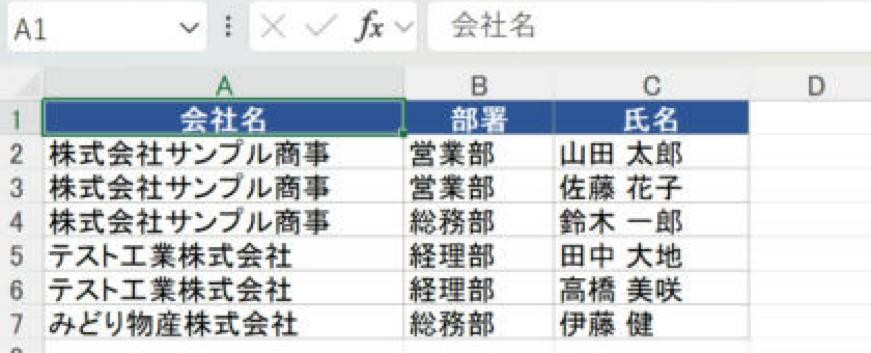
- 1行目に見出し（会社名・部署・氏名）、2行目から1人1行で入力します。空白行は入れません。
- 会社名で並べ替えて、同じ会社の人が続けて並ぶようにします（「データ」タブ →「並べ替え」）。
- 会社名の表記をそろえます（「株式会社」の有無、全角・半角、前後の空白）。1文字でも違うと、別の会社として改ページされます。
- 保存して、Excelを閉じます。開いたままだと、Wordからつなぐときに確認やエラーが出ることがあります。
手順1Wordで「名簿」の差し込みを始める
- Wordを起動して白紙の文書を開きます。
- 「差し込み文書」タブ →「差し込み印刷の開始」→「名簿(D)」を選びます。
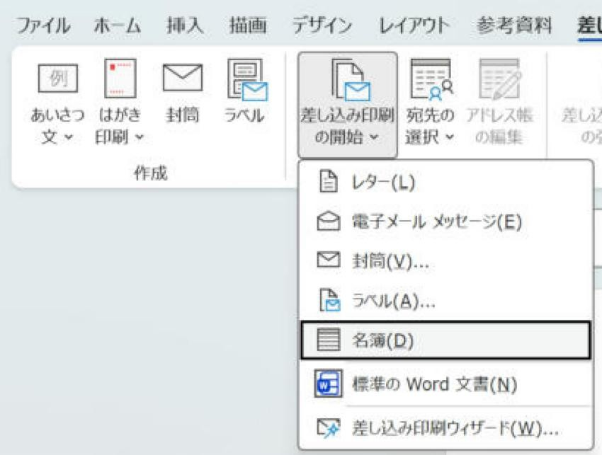
レターは1人ごとに新しいページを作ります。名簿は、文書の中身を1人分ずつ続けて差し込み、ページを分けません。どこで改ページするかを、こちらで決められるのは名簿のほうです。
手順2Excelファイルとシートを指定する
- 「宛先の選択」→「既存のリストを使用(E)」を選びます。
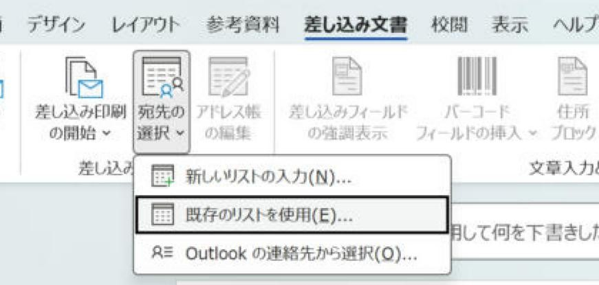
- 「データ ファイルの選択」の画面が開きます。準備したExcelファイルの保存場所を開き、ファイルを選んで「開く」を押します。
- 「テーブルの選択」で、名簿のシート（撮影では「担当者$」）を選びます。「先頭行をタイトル行として使用する」にチェックが入っていることを確認して「OK」を押します。
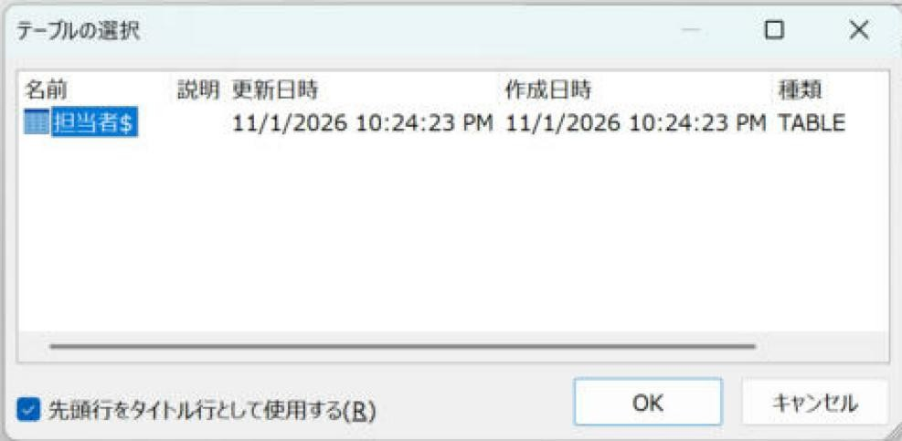
手順3宛先の一覧を確認する
「アドレス帳の編集」を押すと、「差し込み印刷の宛先」が開きます。Excelの名簿が読み込まれているかを確認します。
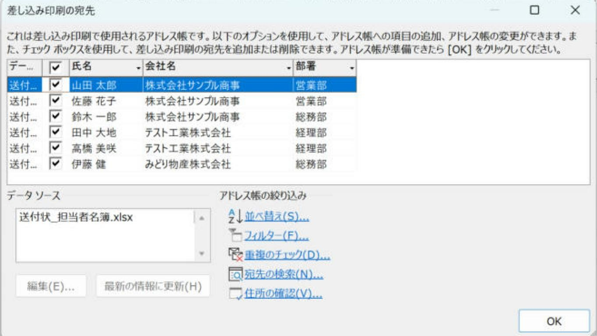
- 左のチェックを外した人は差し込まれません。
- この画面の「並べ替え」で順番を変えると、同じ会社が離れてしまうことがあります。並び順はExcel側で決めておき、ここでは変えないのが安全です。
- 確認したら「OK」を押します。
手順4文面を入力し、差し込みフィールドを入れる
文書に、次の4行を作ります。« » の部分は、手で入力せず「差し込みフィールドの挿入」から入れます。
| 行 | 内容 | 入れ方 |
|---|---|---|
| 1行目 | «会社名» 御中 | 「差し込みフィールドの挿入」の▼→「会社名」、続けて「 御中」と入力 |
| 2行目 | 書類送付のご案内 | そのまま入力 |
| 3行目 | 下記の方々あてに書類をお送りします。 | そのまま入力 |
| 4行目 | «部署» «氏名» 様 | 「部署」を挿入→全角スペース→「氏名」を挿入→「 様」と入力 |
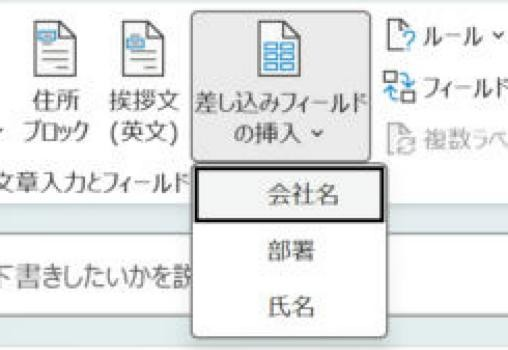
4行目の最後で Enter を押し、最後に空の行を1つ作ります。これがないと、差し込んだときに名前が改行されず横につながりました。
手順5結果のプレビューで確認する
「差し込み文書」タブの「結果のプレビュー」を押すと、«会社名» などが名簿の1人目の値に変わります。
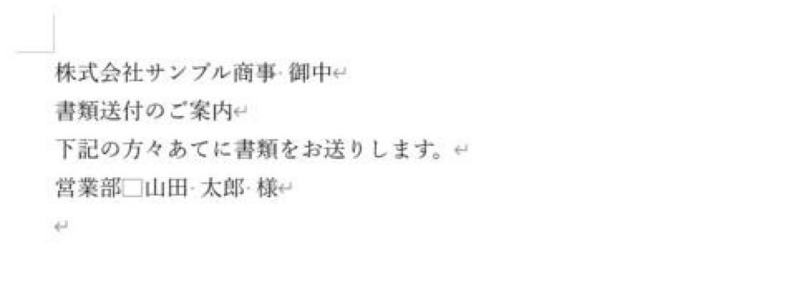
- 「結果のプレビュー」の右にある ▶ を押すと、2人目、3人目…と切り替わります。
- 名簿の差し込みでは、プレビューには1人分ずつしか表示されません。会社ごとのまとまりは、手順8で新しい文書に差し込んで確認します。
- 確認したら、もう一度「結果のプレビュー」を押してオフに戻します（手順7はオフの状態で行います）。
手順6いったん差し込んで、何が足りないか見る
この状態で「完了と差し込み」→「個々のドキュメントの編集」→「すべて」→「OK」を押すと、次のような新しい文書ができます。
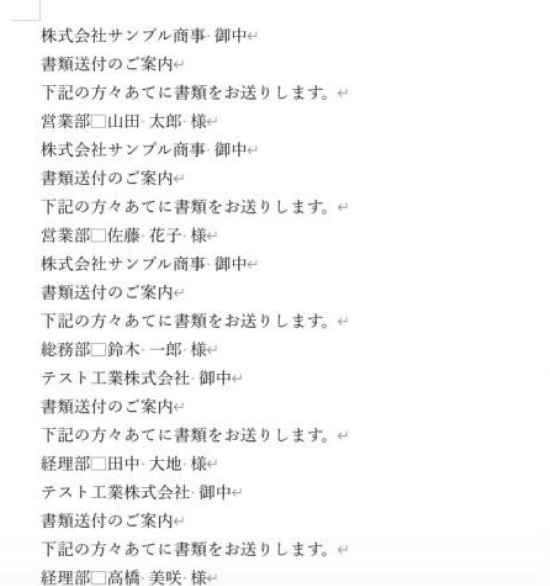
欲しいのは「会社名と本文は会社が変わったときだけ出し、その前で改ページする」形です。これを手順7で設定します。確認したら、この新しい文書は保存せずに閉じます。
手順7会社が変わったときだけ見出しを出す設定
ここからはフィールドコードを使います。ボタンにはない設定なので、キーボードで入力します。押すキーを順番に表にしたので、その通りに進めてください。
7-1. フィールドコードを表示する
- 「結果のプレビュー」がオフになっていることを確認します。
- Alt+F9 を押します。«会社名» が
{ MERGEFIELD 会社名 }の形に変わります。もう一度押すと元に戻ります。 - 「表示」タブ →「下書き」にすると、改ページが点線1本で表示され、作業しやすくなります。
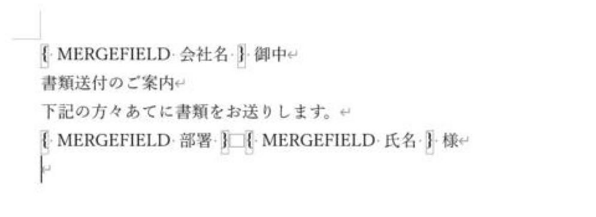
7-2. フィールド用のかっこ「{ }」の入れ方
フィールドコードの「{ }」は、キーボードの波かっこでは動きません。Ctrl+F9 を押すと入る、灰色の「{ }」を使います。
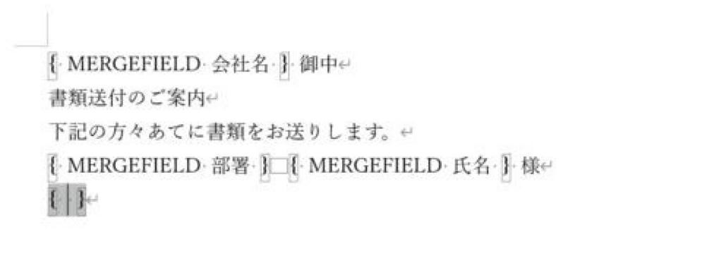
- 「{ }」の中に入力したら、→ を2回押すと、閉じかっこ「}」の外に出られます（1回だとまだ中にいます）。
- 「"」は半角で入力します。
=、<>、>の前後には半角スペースを入れます。 - 間違えたら Ctrl+Z で戻せます。
7-3. 見出しの3行を「会社が変わったときだけ」にする
| 順 | 操作 | 画面の状態 |
|---|---|---|
| 1 | 見出しの3行（«会社名» 御中 〜 お送りします。）を、行の左側をドラッグして3行まとめて選択 | 3行が反転表示になる |
| 2 | Ctrl+F9 を押す | 3行全体が「{{ }}」で囲まれる（下の画面） |
| 3 | Ctrl+Home で文書の先頭へ移動し、→ を1回押す | カーソルが外側の「{」のすぐ後ろに入る |
| 4 | IF と入力（IFの後ろに半角スペース） | |
| 5 | Ctrl+F9 を押して MERGEFIELD 会社名 と入力し、→ → | 内側の「{ }」から外に出る |
| 6 | <> " と入力（前後に半角スペース、最後は半角の「"」） | |
| 7 | Ctrl+F9 を押して REF 前社 と入力し、→ → | |
| 8 | " " と入力 | ここまでで「前社と違うとき、次の" "の中を表示する」という形になる |
| 9 | Ctrl+F9 を押して IF と入力、もう一度 Ctrl+F9 を押して MERGESEQ と入力し、→ → | |
| 10 | > 1 " と入力 | |
| 11 | Ctrl+Enter を押す | 「改ページ」の線が入る（2社目以降の前だけ改ページするため） |
| 12 | " "" と入力して → → | 改ページ用のIFが閉じる。この後ろに元の«会社名» 御中が続いている |
| 13 | Ctrl+End で文書の最後へ移動し、↑ で«部署»の行へ移動して Home | カーソルが行頭（外側の「}」の前）に来る |
| 14 | " "" と入力 | 外側のIFが閉じる（違わないときは何も表示しない、の意味） |
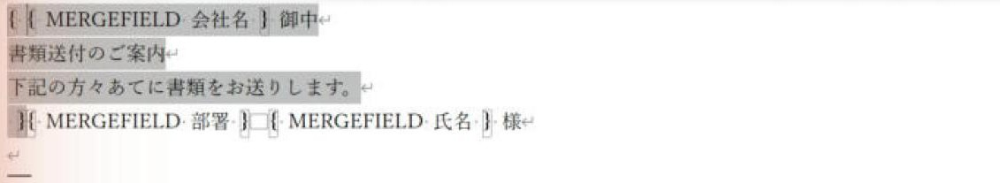
7-4. 名前の行で「今の会社名」を覚える
| 順 | 操作 | 画面の状態 |
|---|---|---|
| 1 | «部署»の行で End を押し、「様」の後ろへ移動 | |
| 2 | Ctrl+F9 を押して SET 前社 " と入力 | |
| 3 | Ctrl+F9 を押して MERGEFIELD 会社名 と入力し、→ → | |
| 4 | " と入力 | 今の人の会社名を「前社」として覚える形になる |
7-5. 文書の先頭に、1人目のための準備を入れる
| 順 | 操作 | 画面の状態 |
|---|---|---|
| 1 | Ctrl+Home で文書の先頭（外側の「{」の前）へ移動 | |
| 2 | Ctrl+F9 を押して IF と入力、Ctrl+F9 を押して MERGESEQ と入力し、→ → | |
| 3 | = 1 " と入力 | |
| 4 | Ctrl+F9 を押して SET 前社 "（なし）" と入力し、→ → | 「（なし）」は全角でかまいません |
| 5 | " "" と入力 | 1人目のときだけ「前社」を空の値で用意する形になる |
これがないと、1人目のときに「前社」がまだ決まっていないため、差し込みで「レコード 1 でフィールドの計算エラー」が出ました。
7-6. 完成したフィールドコード
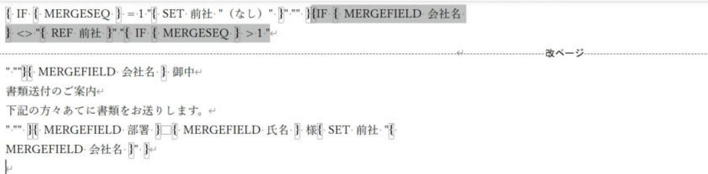
文字で書くと次の形です（「［改ページ］」は Ctrl+Enter で入れた改ページ、行の終わりは Enter）。
{ IF { MERGESEQ } = 1 "{ SET 前社 "（なし）" }" "" }{ IF { MERGEFIELD 会社名 } <> "{ REF 前社 }" "{ IF { MERGESEQ } > 1 "［改ページ］" "" }{ MERGEFIELD 会社名 } 御中
書類送付のご案内
下記の方々あてに書類をお送りします。
" "" }
{ MERGEFIELD 部署 } { MERGEFIELD 氏名 } 様{ SET 前社 "{ MERGEFIELD 会社名 }" }
（空の行）| 部分 | 意味 |
|---|---|
IF { MERGESEQ } = 1 … | 1人目のときだけ、「前社」に「（なし）」を入れておく |
IF { MERGEFIELD 会社名 } <> "{ REF 前社 }" … | 今の人の会社名が、前の人の会社名と違うときだけ、見出しの3行を表示する |
IF { MERGESEQ } > 1 "［改ページ］" "" | 2社目以降のときだけ、見出しの前で改ページする（1ページ目が白紙にならないように） |
SET 前社 "{ MERGEFIELD 会社名 }" | 名前を表示した後、今の人の会社名を「前社」として覚える |
入力が終わったら Alt+F9 でコードの表示を戻し、「表示」タブ →「印刷レイアウト」に戻します。作った文書は名前を付けて保存しておくと、次回は名簿を差し替えるだけで使えます。
手順8新しい文書に差し込んで確認・印刷する
- 「完了と差し込み」→「個々のドキュメントの編集」を選びます。

- 「新規文書への差し込み」で「すべて」を選び、「OK」を押します。

- 差し込み済みの新しい文書（「ディレクトリ1」など）が開きます。会社ごとに1ページになっているかを確認します。
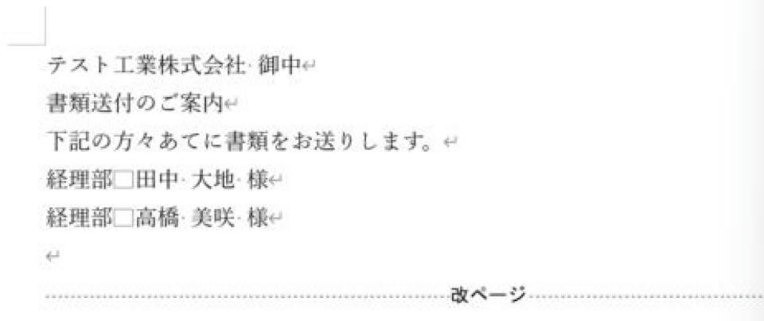
- 確認できたら、この新しい文書から Ctrl+P で印刷します。PDFにする場合は「ファイル」→「名前を付けて保存」でPDFを選びます。
撮影した例（3社・6名）では、エラーなく3ページにまとまりました。紙への印刷は行っていません。担当者が多く1ページに入りきらない会社は、次のページにはみ出します。
応用：送付状に入れたいものを足す
- 日付・差出人・あいさつ文：見出しのIF（7-3で作った外側の「{ }」）の中、«会社名» 御中 の前後に書きます。外に書くと、担当者の人数分くり返されます。
- 担当者の前に「・」を付ける：«部署»の行の先頭に入力します。
- 必要な会社だけ：Excelで対象の会社だけの名簿を作るのが安全です（必要な人だけ印刷する2つの方法のパターン2）。
よくあるつまずき
| 症状 | 確認すること |
|---|---|
| 「レコード 1 でフィールドの計算エラー」が出る | 7-5の、文書の先頭のコードが入っているか。「前社」の名前が3か所で同じか。 |
| 1人ずつ別のページになる | 手順1で「レター」を選んでいないか。「名簿」で始めます。 |
| 見出しが1人ごとにくり返される | 見出しの3行が外側のIFの「" "」の中に入っているか。「"」が半角か。 |
| 同じ会社が2ページに分かれる | Excelで会社名順に並んでいるか。会社名の表記ゆれがないか。 |
| 1ページ目が白紙になる | 改ページを MERGESEQ > 1 のIFで囲んでいるか。 |
| 会社名の前に空白が入る | 改ページ用のIFの「}」と «会社名» の「{」の間に、スペースが残っていないか。 |
| 名前が改行されず横につながる | 名前の行の後ろに空の行があるか。 |
| コードがそのまま印刷される | Alt+F9 でコードの表示を戻したか。「{ }」を Ctrl+F9 で入れたか。 |
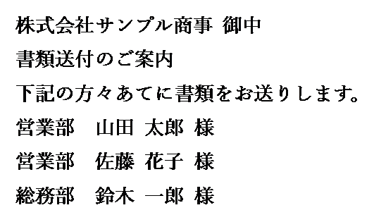
実機で確認した内容
- 確認日：2026-11-03
- 環境：Windows版 Word 16.0
- 確認した範囲：本文のコードを入れて3社・6人を差し込み、3ページになった。2ページ目はテスト工業株式会社の2人、3ページ目はみどり物産株式会社の1人。
- 確認していないこと：担当者が多く1ページに入らない場合、紙への印刷。環境により結果が異なる場合があります。
更新履歴
- 2026-11-03：基本記事から独立させ、差し込み結果を追加。